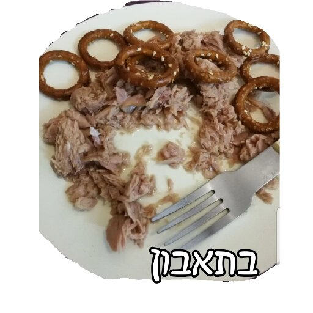

Tuna & Pretzels

Tuna & Pretzels is the incredible dish invented by the Israeli chef and entreprenuer that goes by the name of J.W. Zacher.
The story of the invention of the Tuna & Pretzels recipe is an exquisite and especially tasty one.
As the mythos tells us, Mr J.W. Zacher was hungry one day, and he opened up his fridge and the only things he had were tuna and pretzels.
So he decided to mix them together and invented a meal that would come to take over the world.
"Tuna and Pretzels are better than pizza!" - Steve Jobs (His last words to his son)
ingridients
1. Tuna.
2. Pretzels.
steps
1. Open up a can of tuna.
2. Open up a a bag of pretzels.
3. Mix them all together in a nicely sized bowl or plate.
4. Eat. Proceed with caution.